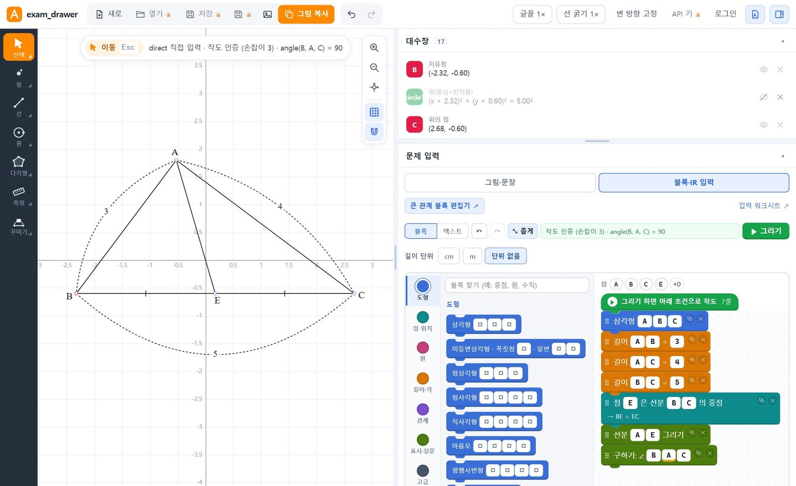
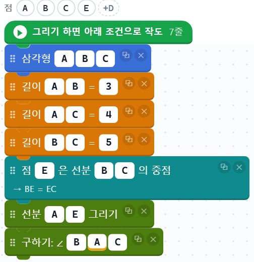
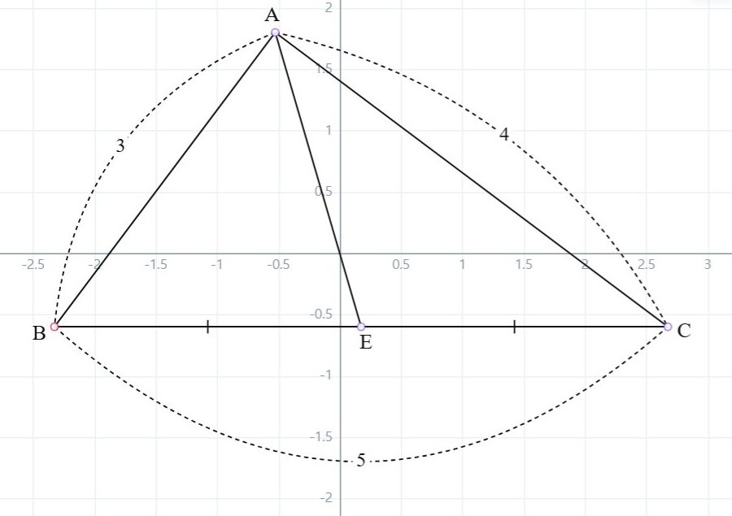
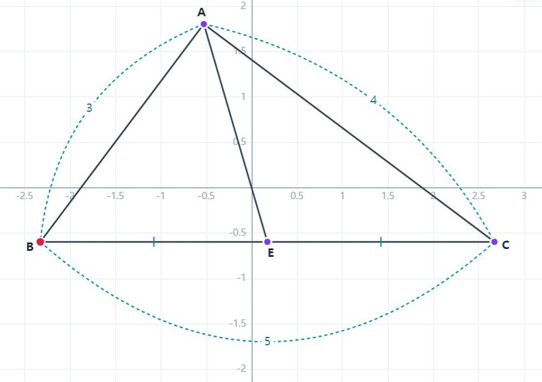

01블록 코딩 · 로컬 작도
블록을 쌓으면,
조건을 지키는 그림이 됩니다
삼각형·길이·중점 같은 블록 하나가 조건 한 줄입니다. 그리기를 누르면 자와 컴퍼스 작도 순서를 찾아 그리고, 점을 끌어도 조건이 깨지지 않는지 검증합니다.
자와 컴퍼스 작도 순서를 찾아 조건이 지켜지는지 검증한 도형을 그립니다. 시험지 양식으로 다듬어 한글에 바로 붙여 넣고, 문제 사진은 AI로 조건까지 한 번에 바꿉니다.

삼각형·길이·중점 같은 블록 하나가 조건 한 줄입니다. 그리기를 누르면 자와 컴퍼스 작도 순서를 찾아 그리고, 점을 끌어도 조건이 깨지지 않는지 검증합니다.
조건 블록

작도 결과

만든 그림은 버튼 하나로 클립보드에, 문제 문장은 편집 가능한 한글 수식 개체로 복사됩니다. 캡처하고 수식을 다시 입력하는 일이 없어집니다.
.hml 문서로 저장수식 포함 복사3. 삼각형 ABC에서 AB = 3, AC = 4, BC = 5이다. 선분 BC의 중점을 E라 할 때, ∠BAC의 크기는?
검은 가는 선, 명조 글씨, 점 없이 이름만 — 시험지 양식으로 그려집니다. 크기·굵기·방향을 한 번에 맞추고, 필요한 선만 골라 다듬습니다.
$\angle ABC$ 같은 수식
시험지 모양 — 내보낼 때는 격자 없이 도형만 나갑니다.
AI가 사진 속 지문과 그림을 읽어 조건(IR)으로 바꿉니다. 결과는 블록으로 보여서 원래 문제와 비교하며 바로 고칠 수 있습니다.
본인 API 키 필요 · 문제 하나에 수 원 정도. 이 기능을 쓸 때만 사진·문장이 고른 AI 회사로 전송됩니다.

모양을 눈대중으로 맞추지 않고, 조건에서 출발해 작도하고 확인합니다.
설치 과정이 없는 단일 실행 파일입니다. 별도 브라우저나 Python 설치는 필요 없습니다.
GeometryDrawer.exe를 받아 바탕화면·문서처럼 쓰기 가능한 폴더에 둡니다.
더블클릭하면 작은 실행 창이 뜨고 기본 브라우저에 작도판이 열립니다. 첫 실행은 몇 초 걸립니다.
실행 창의 ‘업데이트 하기’로 새 버전을 받고, 창을 닫으면 끝납니다. 그 전에 작업을 저장하세요.
Get-FileHash GeometryDrawer.exe를 실행해 비교하면 됩니다.
무엇이 어디에 저장되고, 업데이트가 어떻게 확인되는지.
%LOCALAPPDATA%\GeometryDrawer에 저장합니다. exe를 옮기거나 업데이트해도 그대로 남습니다.
새 버전 정보에는 개발자의 서명이 붙어 있습니다. 프로그램은 서명과 파일 해시가 모두 맞을 때만 교체하고, 새 버전이 시작되지 않으면 이전 버전으로 되돌립니다. 저장한 도면·비밀번호·API 키는 유지됩니다.
기능별 자세한 사용법은 사용 설명서에 화면과 함께 있습니다.
블록·직접 입력으로 작도하는 기능은 인터넷 없이 됩니다. 사진·문장 AI 변환과 업데이트 확인에만 인터넷이 필요합니다.
작도판의 ‘로그인’에서 비밀번호를 정한 뒤 ‘API 키’에 쓰려는 회사(OpenAI·Claude·Google·Upstage)의 본인 키를 입력하고, 문제 입력의 ‘AI’ 목록에서 모델을 고릅니다. 비밀번호는 8자 이상이며 저장되지 않으니 잊지 않도록 해 주세요. 잊으면 암호화된 도면과 키를 열 수 없습니다.
‘수식 포함 복사’는 한컴 한글이 설치된 PC에서 동작합니다. 한글이 없으면 ‘한글 문서 저장’으로 .hml 파일을 받아 나중에 열 수 있습니다. 그림 복사와 PNG 저장은 한글 없이도 됩니다.
한 도형당 30초가 지나면 자동으로 멈춥니다. 조건이 너무 많거나 서로 맞지 않는 경우가 많으니, 조건을 확인하거나 줄여서 다시 시도하세요.
실행 창의 ‘저장 폴더’를 누르면 열리는 폴더의 logs에 실행 기록이 있습니다. 8765 포트가 사용 중이면 다른 포트를 자동으로 고릅니다.
이전 버전은 업데이트 위치가 달라서 버튼으로 새 버전을 받지 못합니다. 이 페이지에서 한 번만 새로 받아 기존 파일을 바꿔 주세요. 그 뒤로는 ‘업데이트 하기’로 받을 수 있습니다.